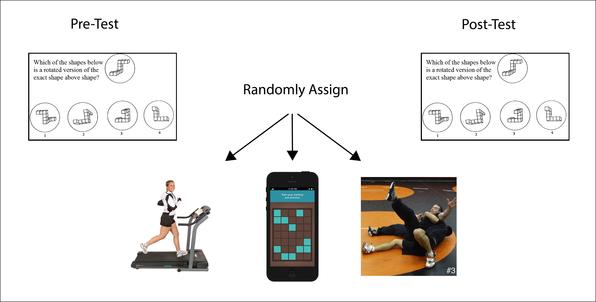
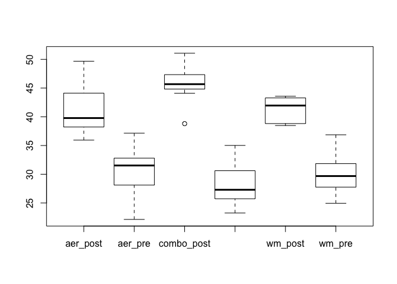

Background
This simulated data is based off of training study run by David Moreau. In this study, he examined which of the following programs would be better for improving spatial memory:
- Aerobic exercise (
aer) -- basically running on a treadmill. - Working memory training (
wm) -- memorizing locations while doing a distracting task on the computer. - Something he called Designed Sport Training (
combo), meant to combine spatial memory with consistent exercise.
As shown in the diagram below, participants were tested on their spatial memory, then assigned to a program for a month. Afterward, their spatial memory was tested again. 
wm_dat <- read.csv('../data/training_long.csv')
The working memory data set has 60 rows and 5 columns. Below are the first 5 rows.
head(wm_dat, 5)
subject session wm_score cond time
1 1 wm_pre 27.75810 wm pre
2 2 wm_pre 29.07929 wm pre
3 3 wm_pre 36.23483 wm pre
4 4 wm_pre 30.28203 wm pre
5 5 wm_pre 30.51715 wm pre
Note that the session, cond, and time columns are factors.
str(wm_dat)
'data.frame': 60 obs. of 5 variables:
$ subject : int 1 2 3 4 5 6 7 8 9 10 ...
$ session : Factor w/ 6 levels "aer_post","aer_pre",..: 6 6 6 6 6 6 6 6 6 6 ...
$ wm_score: num 27.8 29.1 36.2 30.3 30.5 ...
$ cond : Factor w/ 3 levels "aer","combo",..: 3 3 3 3 3 3 3 3 3 3 ...
$ time : Factor w/ 2 levels "post","pre": 2 2 2 2 2 2 2 2 2 2 ...
The levels of each factor are..
- session: aer_post, aer_pre, combo_post, combo_pre, wm_post, wm_pre
- cond: aer, combo, wm
- time: post, pre
Note that session is just another way of expressing cond and time
together. That is, session is the same as..
paste(wm_dat$cond, wm_dat$time, sep="_")
[1] "wm_pre" "wm_pre" "wm_pre" "wm_pre" "wm_pre"
[6] "wm_pre" "wm_pre" "wm_pre" "wm_pre" "wm_pre"
[11] "aer_pre" "aer_pre" "aer_pre" "aer_pre" "aer_pre"
[16] "aer_pre" "aer_pre" "aer_pre" "aer_pre" "aer_pre"
[21] "combo_pre" "combo_pre" "combo_pre" "combo_pre" "combo_pre"
[26] "combo_pre" "combo_pre" "combo_pre" "combo_pre" "combo_pre"
[31] "wm_post" "wm_post" "wm_post" "wm_post" "wm_post"
[36] "wm_post" "wm_post" "wm_post" "wm_post" "wm_post"
[41] "aer_post" "aer_post" "aer_post" "aer_post" "aer_post"
[46] "aer_post" "aer_post" "aer_post" "aer_post" "aer_post"
[51] "combo_post" "combo_post" "combo_post" "combo_post" "combo_post"
[56] "combo_post" "combo_post" "combo_post" "combo_post" "combo_post"
Analyses
What is the data argument?
Note that just like the with function, many functions like boxplot
have an argument to let your refer directly to columns of data without
using the $ character. This is done using the data argument
What are R formulas?
Formulas in R are created using the ~ character. The formula A ~ B
is best read as "A by B". In addition, formula A ~ B + C can be read
as "A by B and C". This is well illustrated by the boxplot
function.
Boxplots
boxplot(wm_score ~ session, data=wm_dat) # wm scores by session

# if you want, the line below is equivalent
# boxplot(data=wm_dat, wm_score ~ session)
However, as noted above the session column is a combination of cond
and time. We can use the + sign in a formula to make the same
plot with these columns.
boxplot(wm_score ~ time + cond, data=wm_dat) # wm scores by cond and time
It's a little annoying that the post- and pre-test measures are alternating in the plot.
Descriptives
library(psych)
descript <- describeBy(wm_dat$wm_score, group=wm_dat$session, mat = TRUE, digits=1)
descript
item group1 vars n mean sd median trimmed mad min max range
11 1 aer_post 1 10 41.0 4.3 39.8 40.5 3.6 35.9 49.7 13.7
12 2 aer_pre 1 10 30.8 4.2 31.5 31.1 3.5 22.1 37.1 15.0
13 3 combo_post 1 10 45.9 3.4 45.7 46.1 1.8 38.8 51.1 12.3
14 4 combo_pre 1 10 28.3 3.7 27.3 28.1 2.7 23.3 35.0 11.8
15 5 wm_post 1 10 41.3 2.1 42.0 41.4 2.4 38.5 43.6 5.1
16 6 wm_pre 1 10 30.3 3.8 29.7 30.1 3.0 24.9 36.9 11.9
skew kurtosis se
11 0.7 -0.9 1.4
12 -0.5 -0.4 1.3
13 -0.3 -0.3 1.1
14 0.5 -1.2 1.2
15 -0.2 -1.9 0.7
16 0.5 -1.1 1.2
Note that the post scores seem to differ between conditions:
descript[c(1,3,5), c('group1', 'mean', 'se')]
group1 mean se
11 aer_post 41.0 1.4
13 combo_post 45.9 1.1
15 wm_post 41.3 0.7
ANOVA
Assuming all of the pre-test scores were the same, we will just consider
the post-test scores. The aov function let's use test whether the mean
scores on the post-test were the same for all conditions.
In terms of formulas we should say, "do wm_score means differ by
cond".
post <- subset(wm_dat, time == "post")
fit <- aov(wm_score ~ cond, data=post)
report <- anova(fit)
report
Analysis of Variance Table
Response: wm_score
Df Sum Sq Mean Sq F value Pr(>F)
cond 2 151.58 75.789 6.5084 0.004933 **
Residuals 27 314.41 11.645
---
Signif. codes: 0 '***' 0.001 '**' 0.01 '*' 0.05 '.' 0.1 ' ' 1
The p-value is 0.0049, so there is strong evidence that the means are not equal.
We can use Tukey's Honestly Significant Differences procedure to test exactly which means are different from each other. This procedure tries to take into account the number of tests we've performed, in order to control the Family Wise Error Rate.
tuk <- TukeyHSD(fit)
tuk
Tukey multiple comparisons of means
95% family-wise confidence level
Fit: aov(formula = wm_score ~ cond, data = post)
$cond
diff lwr upr p adj
combo-aer 4.9216061 1.137791 8.705421 0.0089245
wm-aer 0.3230403 -3.460774 4.106855 0.9756233
wm-combo -4.5985658 -8.382381 -0.814751 0.0148740
Each row is a test. For example, the first row tests whether the combo and aerobic means differed from eachother, and there is strong evidence (p = 0.0089245). Overall, it appears there's strong evidence that participants in the combo condition did better than the other two.
The test that Tukey's HSD is modifying is called a
t-test. We can run
it directly using the t.test function..
post_wm_combo <- subset(wm_dat, time == "post" & cond %in% c('wm', 'combo'))
# notice that we use the same formula as the anova
t.test(wm_score ~ session, data=post_wm_combo)
Welch Two Sample t-test
data: wm_score by session
t = 3.6147, df = 14.966, p-value = 0.002556
alternative hypothesis: true difference in means is not equal to 0
95 percent confidence interval:
1.886415 7.310716
sample estimates:
mean in group combo_post mean in group wm_post
45.88674 41.28818